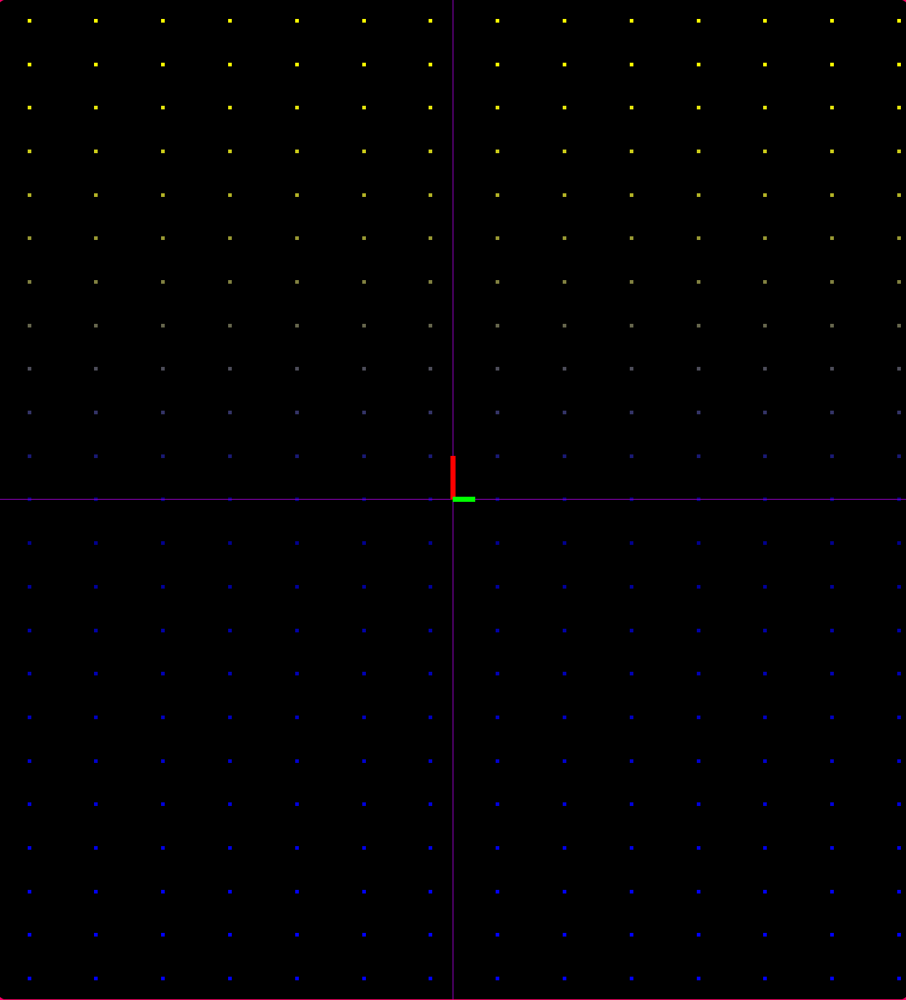

PROJECT1
So, this was one of my frist projects

What it does is nothing special
==> Draws a lattice on the screen using for loops and GL_POINTS
==> Now, let's add a twist, instead of drawing the points normally, lets give them variable color, in my case, i gave it a horizontal gradient
==> Draws a line from left to right and one from top to bottom using GL_LINES
==> Custom one liner function to draw vectors from any point to any point